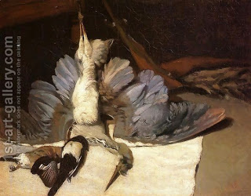

Chullin 57 - Non-Fatal Injuries in Birds
Birds have less vitality than animals, as evidenced by the fact that only one of the two pipes - either the trachea or the esophagus - need to be cut for the bird to be considered slaughtered. Because of this we might have thought that injuries similar to those of animals would be fatal in birds. Therefore, we need the rules for birds that are kosher despite being injured, and here they are.
If the trachea was split lengthwise, and not cut across; if a weasel struck (bit) it on its head in a place that does not make it terefah; if its crop was punctured, and Rabbi Yehudah the Prince says that even if it was removed; if its intestines came out but were not punctured; if its wings were broken, if its legs were broken, or if its feathers were plucked - in all of these cases the bird remains kosher. Rabbi Yehudah says that if its down (small, downy feathers without long shafts that cover the bird's skin) were removed, it is terefah.
Art: Alfred Sisley - Still-Life: Heron with Spread Wings